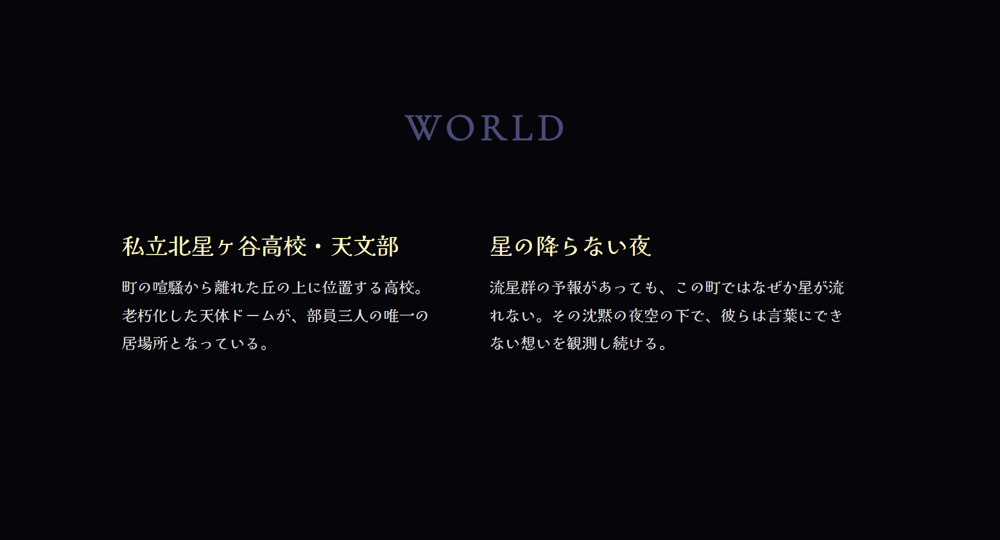
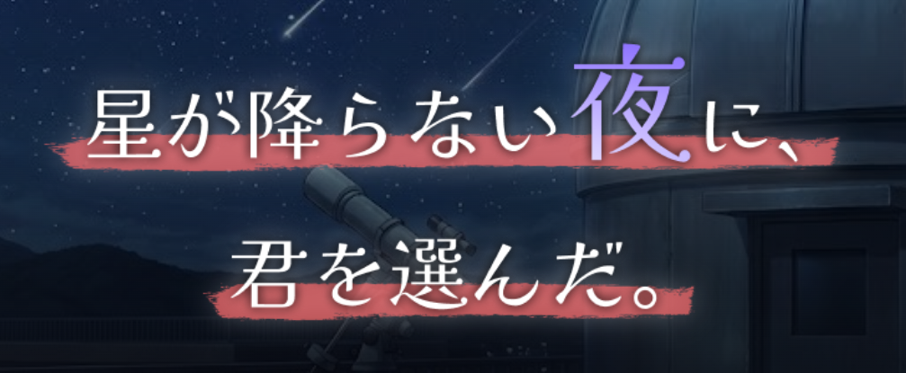
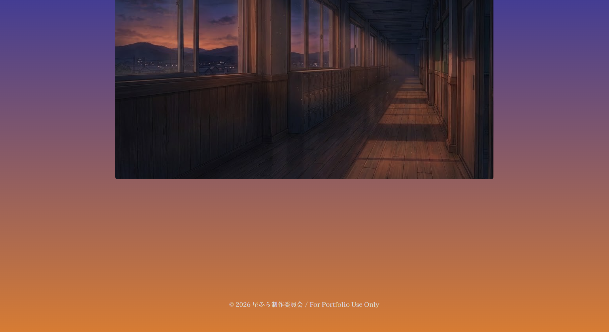
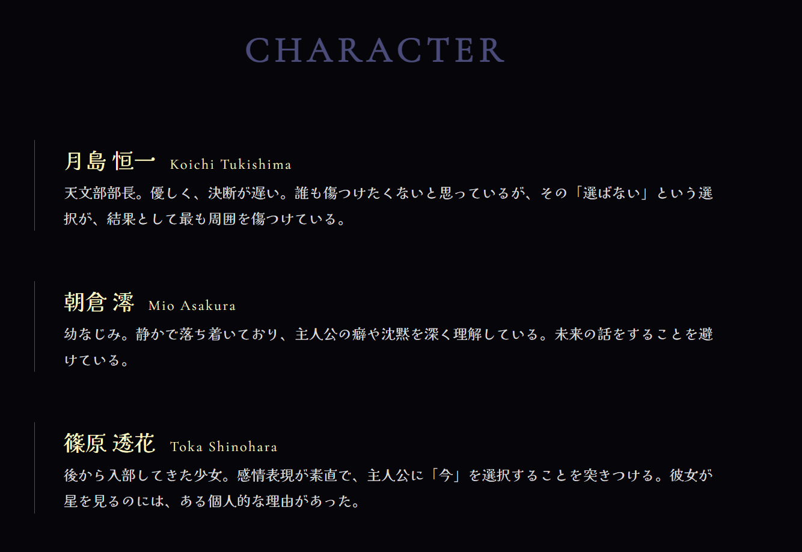
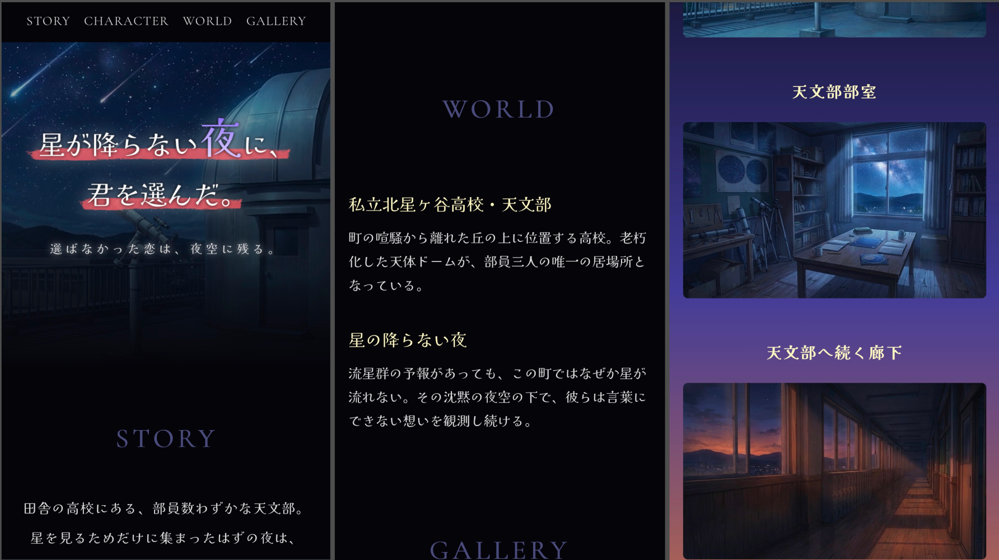

星が降らない夜に、
君を選んだ。
架空のTVアニメ作品を想定して制作した、公式サイト風のWebサイトです。
青春・恋愛・ビターエンドを軸に、田舎寄りの高校にある天文部を舞台とした物語を設定し、夜・星・観測・沈黙といったキーワードから、静かで切ない作品世界を表現しました。

作品概要
作品紹介と制作情報をまとめました
作品紹介
このサイトは、架空のアニメ作品『星が降らない夜に、君を選んだ。』の公式サイトとして制作しました。
単に作品情報を並べるのではなく、作品の空気感をWeb上でどう伝えるかを意識し、余白・配色・文字表現・スクロール演出を通して、静かな青春恋愛作品らしさを表現しています。物語は、天文部に所属する主人公と、幼なじみの少女、後から現れた少女の三人を中心に展開します。
同じ夜空を見上げながらも少しずつすれ違っていく関係性を、暗い夜空や淡い光、抑えた情報量によって表現しました。
制作情報
- 制作期間
- 約20日
- 担当範囲
- 企画整理 / 情報設計 / ロゴ制作 / デザイン / 実装
- 使用技術
- HTML / CSS / JavaScript / Figma
- 制作形態
- 個人制作
- 対応状況
- PC / スマートフォン対応済み
コンセプト
このセクションでは、作品全体の方向性を3つの視点から説明しています。
読む人が作品の雰囲気をふんわりと掴めるよう、情報を整理したセクションです。
テーマ
選ばなかった恋は、夜空に残る。
本作のテーマは、青春の中にある静かなすれ違いと、選択の痛みです。
ビジュアルコンセプト
派手な演出や情報量の多い画面ではなく、余白を多く取り、文字や背景の変化をゆっくり見せることで、
「沈黙」や「言葉にできない感情」を感じられるサイトを目指しました。
世界観・設定
作品ジャンルは青春・恋愛・ビターエンド・三角関係。
舞台は田舎寄りの高校にある天文部で、夜空や星の観測を通して、三人の関係性が少しずつ変化していく世界観を設定しました。
デザインのポイント
夜空や星、沈黙といった作品のキーワードをもとに、
静かで切ない青春恋愛作品らしさが伝わるデザインを意識しました。
color
color
color2
color
夜空をイメージした配色
黒や深い青を基調にし、星や夜空を感じられる落ち着いた配色にしました。
アクセントには赤色を取り入れ、恋愛作品らしさも表現しています。

余白で静寂を表現
情報を詰め込みすぎず、余白を多めに取ることで、
夜の静けさや言葉にできない感情を感じられるレイアウトにしました。

ロゴで青春と恋愛を表現
タイトルロゴはFigmaで自作し、チョークの下線をイメージした表現で青春感を出しました。
下線を赤色にすることで、恋愛作品であることも伝わるようにしています。
実装・工夫した点
HTML/CSSで公式サイトとしてのページ構成を作成し、
JavaScriptでは作品の雰囲気を補うための控えめな演出を実装しました。
見た目の印象だけでなく、作品情報を伝える順番も意識しています。

スクロールによる背景色の変化
スクロールに応じて背景色が黒から深い青、オレンジへと変化するようにしました。
夜から夜明けへ向かう時間の流れを表現し、物語の余韻が残るような演出を目指しました。

公式サイトを想定したページ構成
TOP / STORY / CHARACTER / WORLD / GALLERYで構成し、
作品のあらすじや登場人物、舞台設定を順番に理解できるようにしました。
情報量を抑えることで、作品の静かな雰囲気を壊さないようにしています。

レスポンシブ対応
PC版の余白や世界観を保ちながら、スマートフォンでも読みやすいように文字サイズや余白を調整しました。
remを基本単位として使用し、画面幅に応じて調整しやすいCSS設計を意識しています。
振り返り
制作を通して、学んだことと今後の展望をまとめました。
学んだこと
この制作を通して、アニメ公式サイトでは、情報を多く載せることよりも、
作品の空気感を壊さずに伝えることが大切だと学びました。
特に、余白・配色・文字の見せ方・動きの量によって、閲覧者が受け取る印象が大きく変わることを実感しました。
今後の展望
今回は作品全体の雰囲気を重視したため、キャラクター個別のビジュアル表現は控えめになっています。
今後はキャラクターの立ち絵や表情差分を追加し、
CHARACTERページやGALLERYページをよりファン向けの内容に発展させたいです。